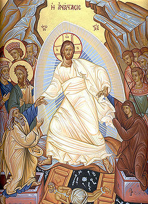
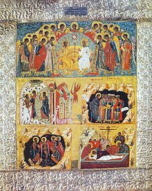

Easter Day
Easter Day juga disebut sebagai hari Paskah atau minggu kebangkitan, merupakan hari raya untuk memperingati bangkitnya Yesus dari kematian. Hari paskah ditentukan dari penganggalan "Equinox"
Dalam KeKristenan Barat, hari Paskah jatuh pada tanggal 22 Maret atau 25 April di hari minggu. Penganggalan ini mengikuti kalender Gregorian, Sedangkan KeKristenan Timur, hari Paskah jatuh antara tanggal 4 April dan 8 Mei sesuai penggalan kalender Julian.
Terdapat beberapa kontroversi mengenai penganggalan hari Paskah. Quartodecimanism, yang menetapkan hari Paskah pada hari keempat belas dalam kalender Ibrani sesuai dengan praktik Alkitab. First Council of Nicaea, menetapkan bahwa Paskah selalu diadakan pada hari Minggu, yang tidak bertepatan dengan fase tertentu dari bulan. Synod of Whitby, sistem ini berdasar pada bukti Bede, yang menetapkan Paskah berlangsung hingga minggu yang jatuh dalam periode tujuh hari dari tanggal 14 hingga 20.
